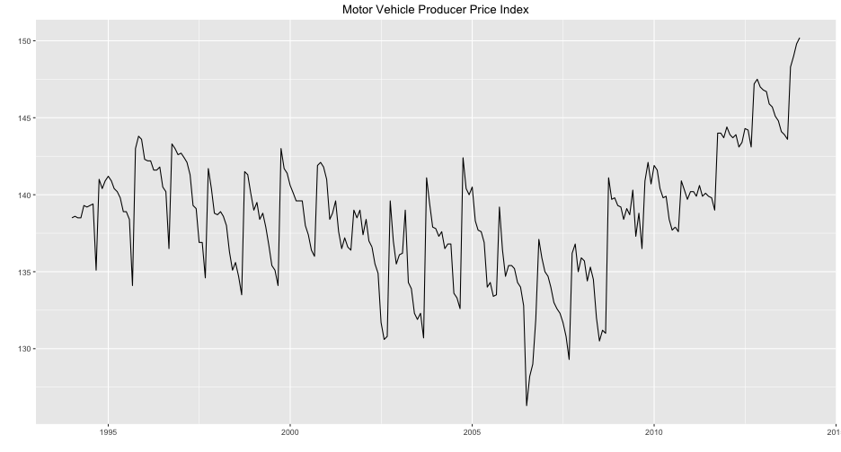
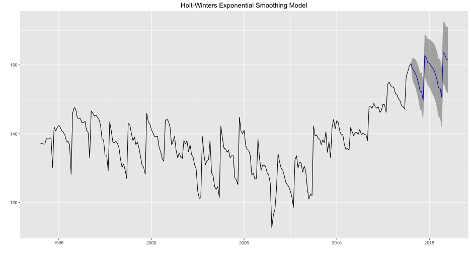
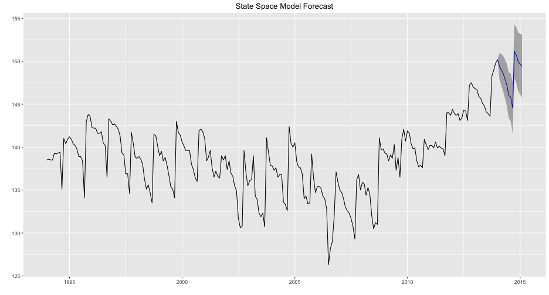
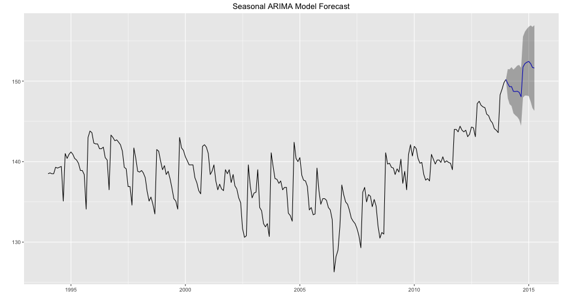

"A measurement of the average change over time in the selling prices received by domestic producers for their output."
-Bureau of Labor Statistics
Todd Young
"A measurement of the average change over time in the selling prices received by domestic producers for their output."
-Bureau of Labor Statistics






| ME | RMSE | MAE | MPE | MAPE | MASE | ACF1 | Theil's U | R-squared | |
|---|---|---|---|---|---|---|---|---|---|
| Training set | 0.00 | 1.21 | 0.85 | -0.01 | 0.62 | 0.41 | 0.06 | 0.91 | |
| Test set | 3.23 | 3.44 | 3.23 | 2.12 | 2.12 | 1.57 | 0.30 | 3.27 | -6.28 |
| ME | RMSE | MAE | MPE | MAPE | MASE | ACF1 | Theil's U | R-squared | |
|---|---|---|---|---|---|---|---|---|---|
| Training set | 0.06 | 1.22 | 0.87 | 0.04 | 0.63 | 0.42 | 0.06 | 0.91 | |
| Test set | 2.41 | 2.57 | 2.41 | 1.58 | 1.58 | 1.17 | -0.50 | 2.20 | 0.37 |
| ME | RMSE | MAE | MPE | MAPE | MASE | ACF1 | Theil's U | R-squared | |
|---|---|---|---|---|---|---|---|---|---|
| Training set | 0.03 | 1.41 | 0.96 | 0.01 | 0.70 | 0.47 | -0.01 | 1.00 | |
| Test set | 0.12 | 0.81 | 0.74 | 0.08 | 0.49 | 0.36 | -0.04 | 0.65 | 0.88 |